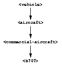

18.1.1 Modeling of ground vehicles
An obvious early step in modeling the behavior of fuel trucks would be to define a <fuel-truck> class. Presumably, we would want that class to inherit from
 |
<vehicle>. Let's look at our current definitions of both the <vehicle> class and its only direct subclass, <aircraft>:
// The class that represents all self-propelled devices
define abstract class <vehicle> (<physical-object>)
// Every vehicle has a unique identification code
slot vehicle-id :: <string>, required-init-keyword: id:;
// The normal operating speed of this class of vehicle in miles per hour
each-subclass slot cruising-speed :: <positive-integer>;
// Allow individual differences in the size of particular aircraft, while
// providing a suitable default for each class of aircraft
each-subclass slot standard-size :: <size>;
end class <vehicle>;
// This class represents vehicles that normally fly for a portion of
// their trip
define abstract class <aircraft> (<vehicle>)
slot altitude :: <integer>, init-keyword: altitude:;
// Direction here is either #"inbound" or #"outbound".
slot direction :: <symbol>;
// The next transition that this aircraft might be able to make.
slot next-transition :: <aircraft-transition>,
required-init-keyword: transition:, setter: #f;
end class <aircraft>;
As a start, we can define a <fuel-truck> class as a subclass of <vehicle>. To operate on instances of this class, we will no doubt need to know how much aircraft fuel they contain. We define one initial slot, aircraft-fuel-remaining. We also need to provide initial values for the inherited slots cruising-speed and standard-size.
define class <fuel-truck> (<vehicle>)
// Amount of aircraft fuel remaining in the tank
slot aircraft-fuel-remaining :: <integer>,
init-keyword: aircraft-fuel-remaining:, init-value: 0;
inherited slot cruising-speed, init-value: 25;
inherited slot standard-size,
init-value: make(<size>, length: 30, width: 10, height: 10);
end class <fuel-truck>;
This definition serves our immediate purpose, but the class hierarchy is not as modular as it might be. Suppose that we want to take account of other vehicles on the ground, such as baggage carriers or fire trucks? We can anticipate that all ground vehicles might have common features, and we do not want each new class to be a direct subclass of <vehicle>. As a refinement, we define two intermediary classes, <ground-vehicle> and <flying-vehicle>:
define abstract class <ground-vehicle> (<vehicle>)
end class <ground-vehicle>;
define abstract class <flying-vehicle> (<vehicle>)
end class <flying-vehicle>;
define class <fuel-truck> (<ground-vehicle>)
// How much aircraft fuel is left in the tank
slot aircraft-fuel-remaining :: <integer>,
init-keyword: aircraft-fuel-remaining:, init-value: 0;
inherited slot cruising-speed, init-value: 25;
inherited slot standard-size,
init-value: make(<size>, length: 30, width: 10, height: 10);
end class <fuel-truck>;
define abstract class <aircraft> (<flying-vehicle>)
slot altitude :: <integer>, init-keyword: altitude:;
slot direction :: <symbol>;
slot next-transition :: <aircraft-transition>,
required-init-keyword: transition:, setter: #f;
end class <aircraft>;
At this point, we are going to leave the fuel-truck simulation. We do not model the fuel-supply problem further in this book. We do want to explore opportunities that our new class hierarchy presents for restructuring the aircraft classes.